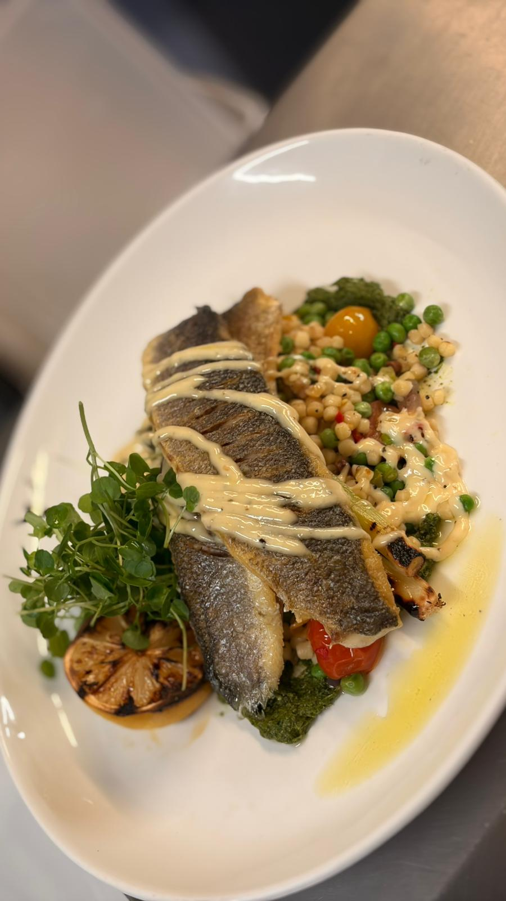

Steak & Grill — Hertfordshire
Seasonal menus. The finest cuts. Four locations.
Our philosophy
Our chef brigade are given the freedom to use the highest quality produce, preparing a seasonally changing menu — no compromises, every time.
Our story →
What's on
Find us
Four locations across Hertfordshire & Buckinghamshire